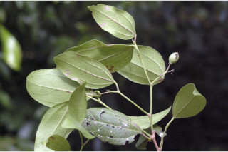
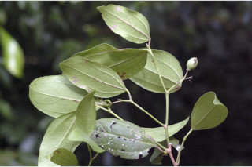

Trees ca. 12 m tall.
12 ಮೀ. ಎತ್ತರದವರೆಗಿನ ಮರಗಳು.
Trees ca. 12 m tall.
மரங்கள் 12 மீ. உயரம் வரை வளரக்கூடியது.
Bark grey, lenticellate; blaze brownish.
ತೊಗಟೆ ಬೂದು ಬಣ್ಣದಲ್ಲಿದ್ದು,ವಾಯುವಿನಿಮಯ ಬೆಂಡು ರಂಧ್ರಗಳ ಸಮೇತವಿರುತ್ತವೆ;ಕಚ್ಚು ಮಾಡಿದ ಜಾಗ ಕಂದು ಬಣ್ಣದ ಛಾಯೆಯಲ್ಲಿರುತ್ತದೆ.
Bark grey, lenticellate; blaze brownish.
மரத்தின் பட்டை சாம்பல் நிறமானது, பட்டைத்துளைகள் (லெண்டிசெல்லேட்) உடையது; உள்பட்டை ப்ரவுன் நிறமானது.
Young branchlets angular to subterete, pubescent when young, later glabrous.
ಕಿರುಕೊಂಬೆಗಳು ಕೋನಯುಕ್ತದಿಂದ ಉಪದುಂಡಾಗಿರುವ ರೀತಿಯಲ್ಲಿರುತ್ತವೆ, ಎಳೆಯದಾಗಿದ್ದಾಗ ಮೃದುತುಪ್ಪಳದಿಂದ ಕೂಡಿರುತ್ತವೆ ನಂತರ ರೋಮರಹಿತವಾಗಿರುತ್ತವೆ.
Young branchlets angular to subterete, pubescent when young, later glabrous.
சிறிய நுனிக்கிளைகள் குறுக்குவெட்டுத் தோற்றத்தில் கோணங்களுடையது முதல் கிட்டதட்ட வளையமானது, இளம்பருவத்தில் உரோமங்களுடையது, முதிரும் போது உரோமங்களற்றது.
Leaves simple, alternate, distichous; stipules lateral, pubescent, caducous and leaving scar; petiole 1-1.5 cm long, canaliculate above, pubescent when young; lamina 4.5-11.5 x 2-5 cm, elliptic to elliptic-ovate, apex acute to acuminate, base rounded or acute, sometimes asymmetric, margin entire, chartaceous to coriaceous, glabrous; 3-nerved at base; midrib raised above; secondary_nerves ca. 3 pairs; tertiary_nerves reticulo-percurrent.
ಎಲೆಗಳು ಸರಳವಾಗಿದ್ದು ಪರ್ಯಾಯ ಮಾದರಿಯಲ್ಲಿ ಜೋಡಣೆಯಾಗಿದ್ದು, ಕಾಂಡದ ಎರಡೂ ಕಡೆ ಎದುರು ಬದರಿನ ಲಂಬ ಸಾಲಿನಲ್ಲಿರುತ್ತವೆ; ಕಾವಿನೆಲೆಗಳು ಪಾರ್ಶ್ವದಲ್ಲಿದ್ದು ಮೃದುತುಪ್ಪಳದಿಂದ ಕೂಡಿರುತ್ತವೆ,ಉದುರುವ ಮಾದರಿಯಲ್ಲಿದ್ದು ಉದುರಿ ಹೋದ ನಂತರ ಗುರುತುಗಳನ್ನು ಉಳಿಸುತ್ತವೆ; ತೊಟ್ಟುಗಳು 1-1.5 ಸೆಂ.ಮೀ. ಉದ್ದವಿದ್ದು, ಮೇಲ್ಭಾಗದಲ್ಲಿ ಕಾಲುವೆಗೆರೆ ಸಮೇತವಿರುತ್ತವೆ,ಎಳೆಯದಾಗಿದ್ದಾಗ ಮೃದುತುಪ್ಪಳದಿಂದ ಕೂಡಿರುತ್ತವೆ;ಪತ್ರಗಳು 4.5 – 11.5 X2-5 ಸೆಂ.ಮೀ. ಗಾತ್ರ, ಅಂಡವೃತ್ತದಿಂದ ಅಂಡವೃತ್ತ - ಅಂಡದವರೆಗಿನ ಆಕಾರ,ಚೂಪಾದ ಮಾದರಿಯಿಂದ ಕ್ರಮೇಣ ಚೂಪಾಗುವವರೆಗಿನ ತುದಿ, ದುಂಡಾದ ಅಥವಾ ಚೂಪಾದ,ಕೆಲವು ವೇಳೆ ಅಸಮ್ಮಿತಿಯಾದ ಬುಡ,ನಯವಾದಅಂಚು,ಕಾಗದವನ್ನೋಲುವರೀತಿಯಿಂದತೊಗಲನ್ನೋಲುವವರೆಗಿನಮೇಲ್ಮೈಹೊಂದಿದ್ದು,ರೋಮರಹಿತವಾಗಿರುತ್ತವೆ;ಪತ್ರಗಳ ಬುಡದಲ್ಲಿ 3-ನಾಳಗಳಿರುತ್ತವೆ;ಮಧ್ಯನಾಳಪತ್ರದಮೇಲ್ಭಾಗದಲ್ಲಿಮೇಲೆದ್ದಿರುತ್ತದೆ;ಎರಡನೇ ದರ್ಜೆಯ ನಾಳಗಳು ಅಂದಾಜು 3 ಜೋಡಿಗಳಿರುತ್ತವೆ; ಮೂರನೇ ದರ್ಜೆಯ ನಾಳಗಳು ಜಾಲಬಂಧ ನಾಳ ವಿನ್ಯಾಸದವುಗಳಾಗಿದ್ದು ಎಲೆಯ ದಿಂಡಿಗೆ ಅಡ್ಡವಾಗಿ ಕೂಡುವ ಮಾದರಿಯಲ್ಲಿರುತ್ತವೆ.
Leaves simple, alternate, distichous; stipules lateral, pubescent, caducous and leaving scar; petiole 1-1.5 cm long, canaliculate above, pubescent when young; lamina 4.5-11.5 x 2-5 cm, elliptic to elliptic-ovate, apex acute to acuminate, base rounded or acute, sometimes asymmetric, margin entire, chartaceous to coriaceous, glabrous; 3-nerved at base; midrib raised above; secondary_nerves ca. 3 pairs; tertiary_nerves reticulo-percurrent.
இலைகள் தனித்தவை, மாற்றுஅடுக்கமானவை, இருநெடுக்கு வரிசையிலையடுக்கம் (டைஸ்டிக்கஸ்); இலையடிச்செதில் பக்கவாட்டில் அமைந்தவை, உரோமங்களுடையது, எளிதில் உதிரக்கூடியது மற்றும் தழும்புகளை ஏற்படுத்துகின்றன; இலைக்காம்பு 1-1.5 செ.மீ. நீளமானது, குறுக்குவெட்டுத் தோற்றத்தில் கேனாலிகுலேட், இளம்பருவத்தில் உரோமங்களுடையது; இலை அலகு 4.5-11.5 X 2-5 செ.மீ., நீள்வட்ட வடிவானது முதல் நீள்வட்டம்-முட்டை வடிவானது, அலகின் நுனி கூரியது முதல் அதிக்கூரியது, அலகின் தளம் வட்டமானது அல்லது கூரியது, சிலசமயங்களில் சமமற்றது, அலகின் விளிம்பு முழுமையானது, சார்ட்டோசியஸ் முதல் கோரியேசியஸ், உரோமங்களற்றது; தளத்திலே 3 நரம்புகளை உடையது; மையநரம்பு மேற்புறத்தில் அலகின் பரப்பைவிட உயர்ந்து இருக்கும்; இரண்டாம் நிலை நரம்புகள் 3 ஜோடிகள்; மூன்றாம் நிலை நரம்புகள் வலைப்பின்னல்-பெர்க்கரண்ட் போன்றவை.
Inflorescence axillary cymes; flowers polygamous, usually on new branchlets.
ಪುಷ್ಪಮಂಜರಿಗಳು ಅಕ್ಷಾಕಂಕುಳಿನಲ್ಲಿನ ಮಧ್ಯಾರಂಭಿ ಮಾದರಿಯವು;ಹೂಗಳು ಸಂಕೀರ್ಣ ಲಿಂಗಿಗಳು,ಸಾಮಾನ್ಯವಾಗಿ ಹೊಸ ಕಿರುಕೊಂಬೆಗಳ ಮೇಲಿರುತ್ತವೆ.
Inflorescence axillary cymes; flowers polygamous, usually on new branchlets.
மஞ்சரி இலைக்கோணங்களில் காணப்படுபவை, சைம் வகை; மலர்கள் பாலிகேமஸ், பெரும்பாலும் புதிய சிறிய நுனிக்கிளைகளில் தோன்றுகின்றன.
Drupe, up to 0.8 cm long; seed one.
ಡ್ರೂಪ್ಗಳು 0.8 ಸೆಂ.ಮೀ.ವರೆಗಿನ ುದ್ದವಿರುತ್ತವೆ; ಬೀಜಗಳ ಸಂಖ್ಯೆ 1.
Drupe, up to 0.8 cm long; seed one.
உள்ளோட்டுத்தசைகனி (ட்ரூப்), 0.8 செ.மீ. நீளமானது; ஒர் விதையுடையது.


 
